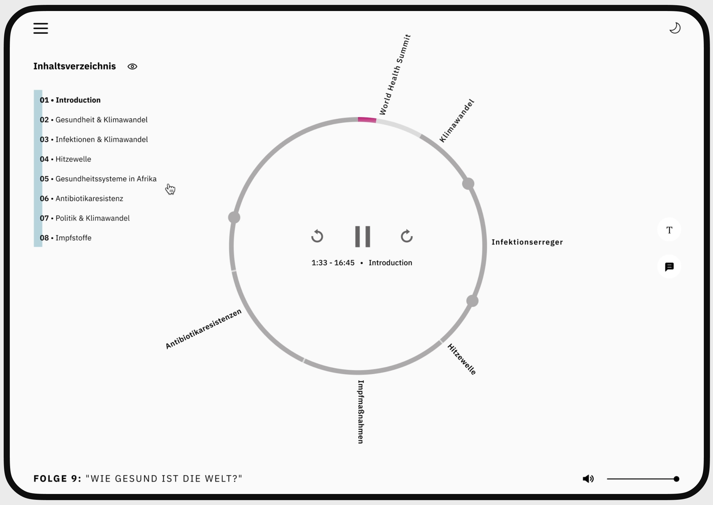
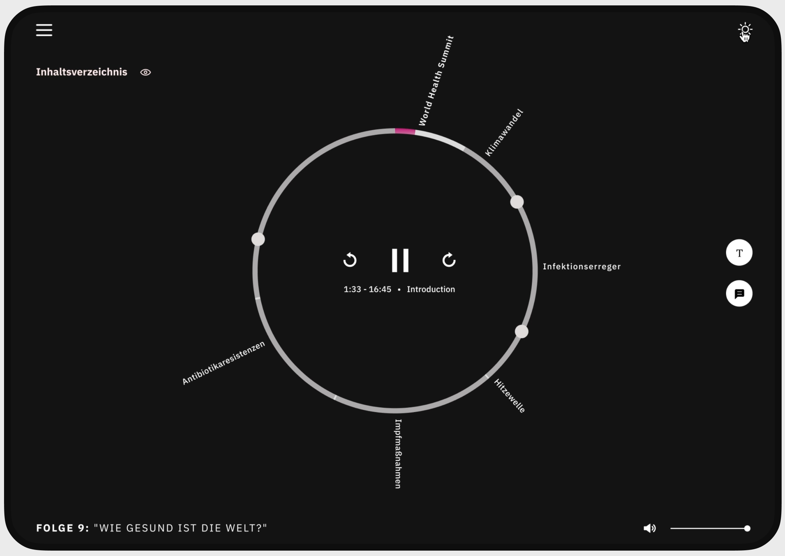
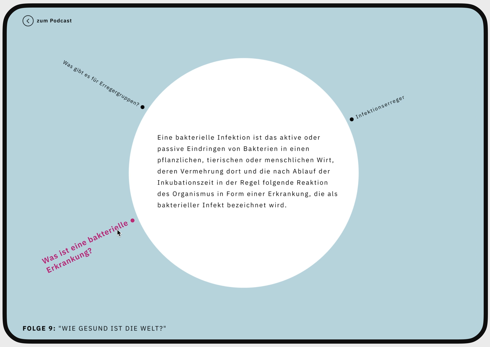
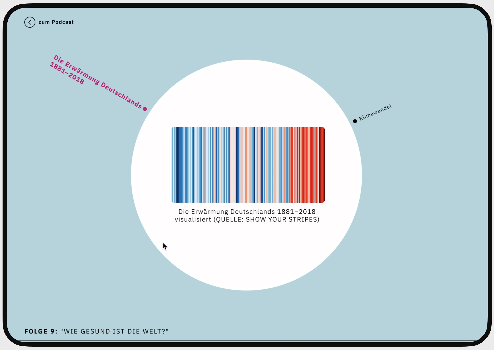
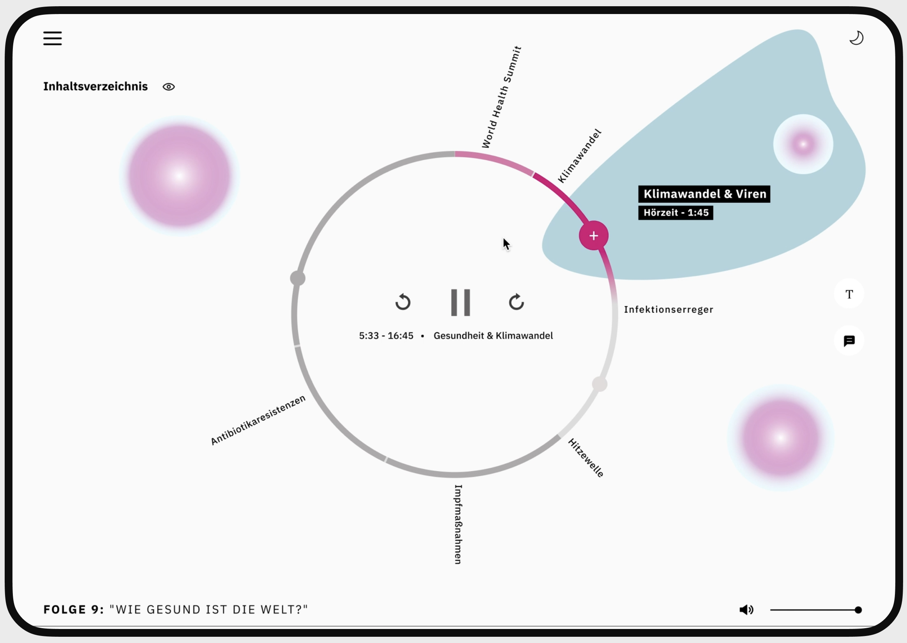
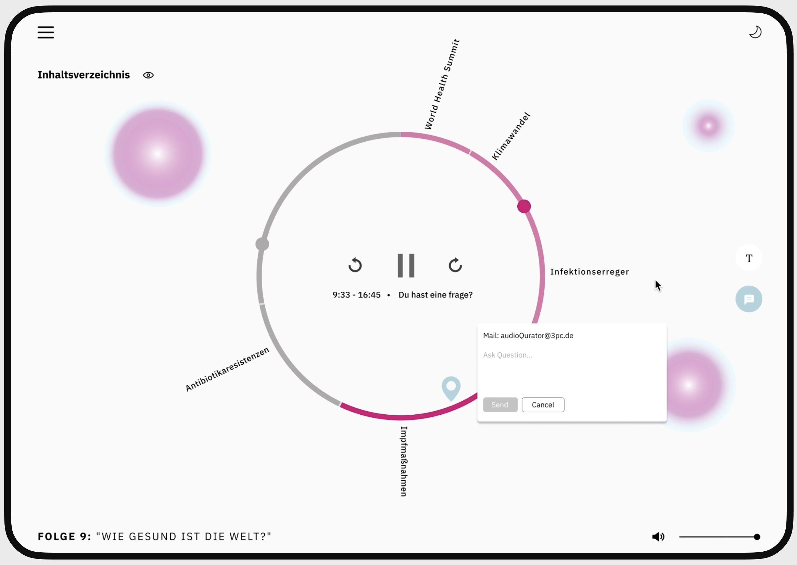

The Berlin Institute of Health presents an array of engaging audio podcasts within the realm of medical research, with a recent focus on the profound implications of climate change on human health. The innovative approach revolves around meticulously extracting key themes from insightful interviews, highlighting pertinent keywords. This deliberate emphasis not only enriches the listening experience but also empowers users to delve deeper into the nuanced aspects of the discussion. To augment this knowledge exploration, we seamlessly integrate related publications and podcasts that amplify the discourse on the impact of climate change on health. This curated collection provides a holistic perspective, allowing users to navigate through a wealth of interconnected information.
Themes are automatically detected and added in a circular audio player.
Dark mode
Additional background information is provided automatically. Media formats such as images or graphics can also present supplementary information.
 The automatic detection of the entire podcast serves to suggest further thematically related podcast recommendations.
The image shows the possibility of going further into a specific topic by sending questions directly in the interface.
Next project - STADTRADELN